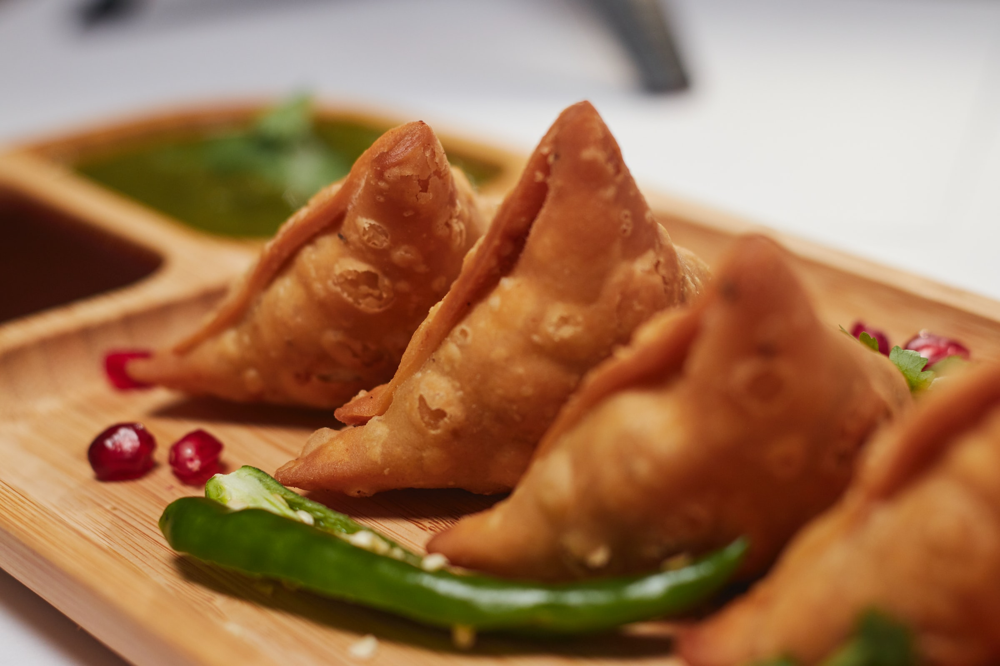

Samsosa
"A good friend becomes your best friend if you have shared samosas more than
secrets"

The triangular shaped flaky pastry filled with spicy potato filling is a popular snack not only in India but in
several countries of the world.
Because samosa is so so common in India, I always considered it to be a quintessential Indian delicacy. But only
later I read that it has its origin in Middle East and it was introduced to India during the Delhi Sultanate
rule.
The South Asian samosa is believed to be derived from a medieval precursor from Central Asia. The earliest
mention of a samosa precursor was by Abbasid-era poet Ishaq al-Mawsili, praising the sanbusaj. Recipes are found
in 10th–13th-century Arab cookery books, under the names sanbusak, sanbusaq, and sanbusaj, all deriving from the
Persian word sanbosag. In Iran, the dish was popular until the 16th century, but by the 20th century, its
popularity was restricted to certain provinces (such as the sambusas of Larestan). Abolfazl Beyhaqi (995–1077),
an Iranian historian, mentioned it in his history, Tarikh-e Beyhaghi.
Ingredients
(For 10-12 servings)
For Making Samosa Pastry
- 2 cups (or) 250 grams refined wheat flour (maida)
1 teaspoon carom seeds
- 1 teaspoon salt or add as required
- 6 tablespoons (or) 50 grams Ghee (clarified butter)
- 7 to 8 tablespoons water or add as required
For Filling
- 3 potatoes medium-sized (300 to 350 grams)
- 1/2 cup green peas (180 grams)
- 2 cups water
Other Ingredients
- 1 tablespoon oil (mustard oil. sunflower, canola, grapeseed oil can be used)
- 1/2 teaspoon cumin seeds
- 1 teaspoon finely chopped ginger
- 2 teaspoons finely chopped green chillies
- 1/2 teaspoon red chili powder
- 1 pinch asafoetida
- 1 to 2 teaspoons dry mango powder
- Salt
- 1 tablespoon chopped coriander leaves
- Any neutral flavored oil for frying
Spices
- 1/2 inch cinnamon
- 1 clove
- 3 black peppercorns
- 1 green cardamom
- 1 green cardamom
- 1/2 teaspoon cumin seeds
- 1/2 teaspoon fennel seeds
- 2 teaspoons coriander seeds
Steps
Making The Samosa Pastry Dough
- Take the flour, carrom seeds, salt in a bowl. Mix well and add ghee.
- With your fingertips rub the ghee or oil in the flour to get a breadcrumb like consistency.
- The whole mixture should clump together when joined and not fall apart.
- Add water in parts and knead to a firm dough.
- If the dough looks dry or floury, then add 1 to 2 tablespoons more water and knead.
- Cover the dough with a moistened napkin and set aside for 30 minutes.
Making Potato Stuffing
- Steam or boil the potatoes and peas till are cooked completely. Drain them of any extra water in a
colander or sieve.
- Peel the boiled potatoes and chop them into small cubes
- Dry roast all the whole spices mentioned in the above list until fragrant taking care not to burn them.
- When the spices are warm or cool at room temperature, grind them in a dry grinder or coffee grinder to a
semi-fine or fine powder.
- Heat oil in a pan. add the cumin seeds and crackle them.
- Add the ginger and green chillies. Sauté for a few seconds until the raw aroma of ginger goes away.
- Add the steamed green peas, red chili powder, the freshly ground spice powder, dry mango powder and
asafoetida.
- Stir and sauté on a low heat for 1 to 2 minutes.
- Add the potato cubes. Mix very well and sauté for about 2 to 3 minutes on low heat with frequent
stirring.
- Set aside the potato filling aside to cool at room temperature.
Assembling & Shaping Samosa
- After resting the dough for 30 minutes, divide the dough in 6 equal pieces.
- Take each piece and roll in your palms first to make a smooth ball.
- Then roll it with a rolling pin keeping the thickness to 1 mm throughout.
- Cut with a knife or a pastry cutter through the center of the rolled samosa pastry.
- With a brush or with your finger tips, spread some water all over the edges.
- Join the two straight ends forming a cone shape.
- Press the edges so that they get sealed well.
- Stuff the prepared samosa cone with the prepared potato-peas stuffing.
- Pinch a part on the edge (check the video & photos). This helps the samosa to stand once it is shaped.
- Press both the edges. Make sure there are no cracks.
- Prepare all the samosa this way and keep covered with a moist kitchen napkin.
Frying Samosa
- Now heat oil for deep frying in a kadai or pan. Once the oil becomes hot (test by adding a small piece
of dough, it should come up quickly once added to the hot oil).
Gently slide the prepared stuffed
samosa & quickly reduce the flame to low.
- Turn over in between and fry until golden. Drain the fried samosa on paper towels to remove excess oil.
- Fry them in batches. For frying the second batch, again increase the temperature of the oil to
medium-heat. Do not overcrowd the pan while frying.
- Add the samosa and then lower the flame, thereby decreasing the temperature of oil.
- This way fry all the samosa in batches.
Serve your Samosas hot!
Go to top